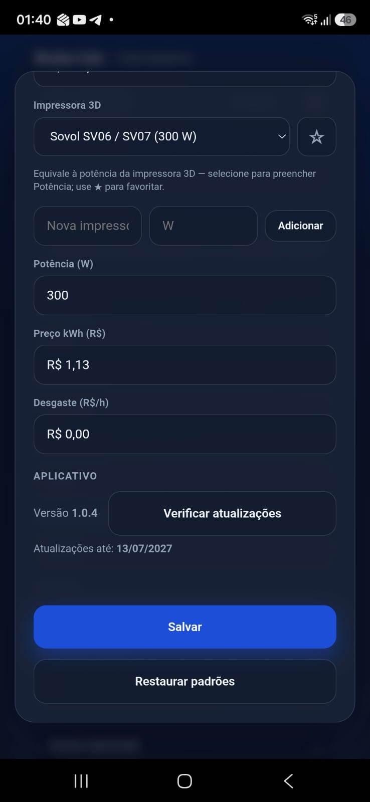
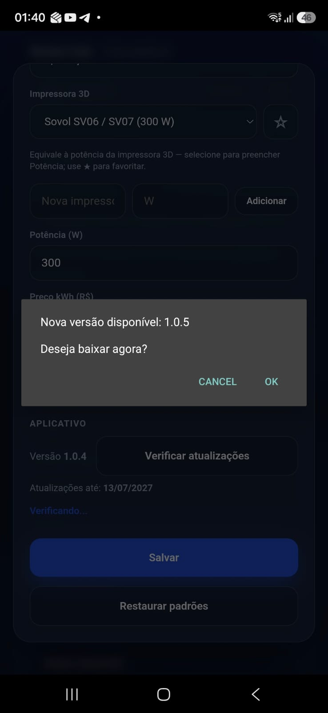
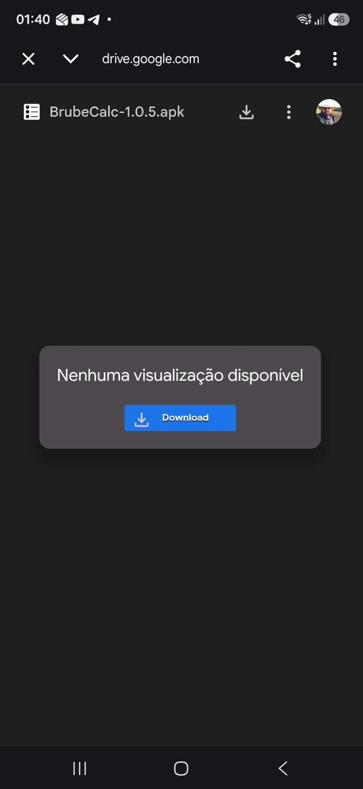
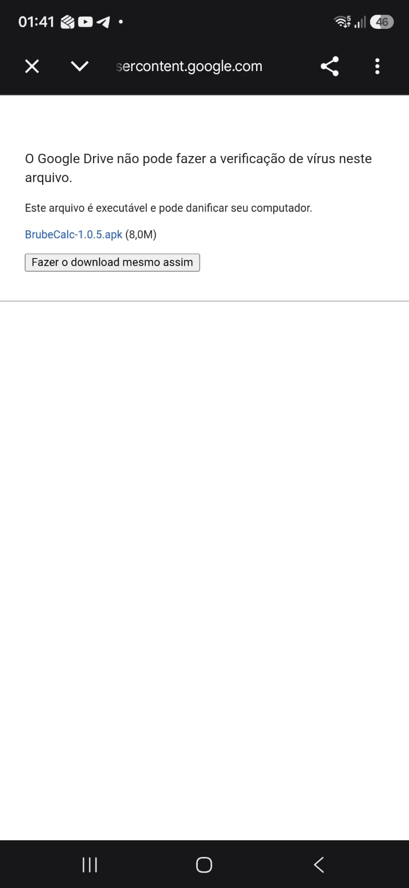
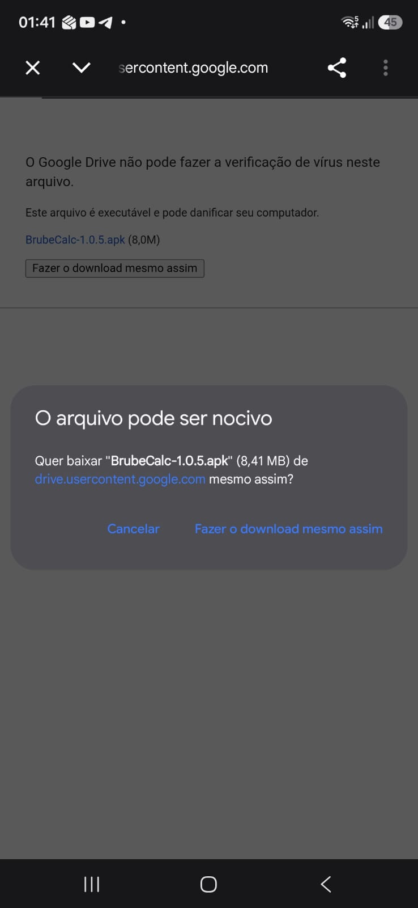
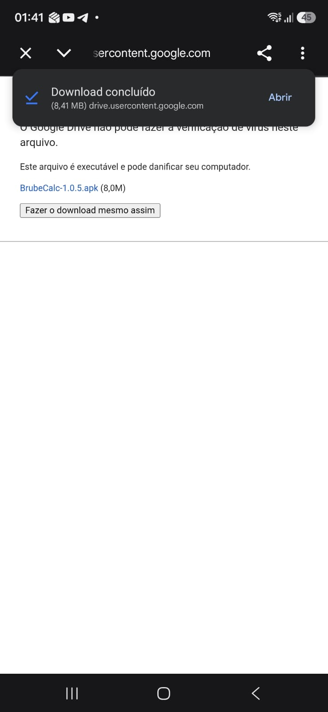
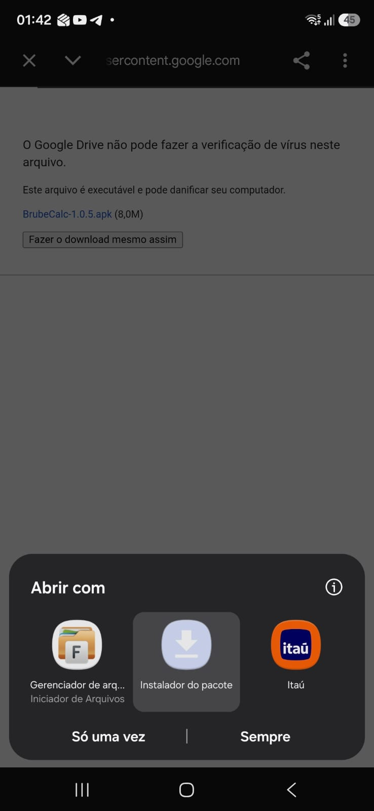
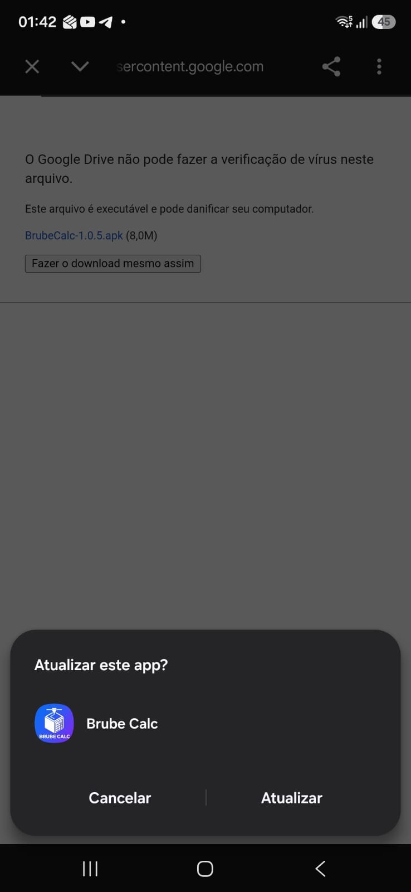
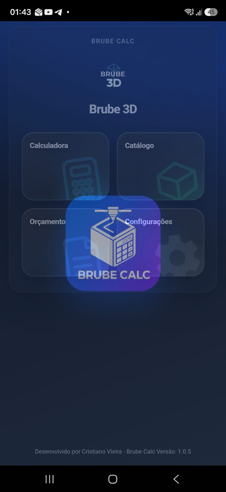

Brube Calc - Como atualizar
Atualização do aplicativo
Como atualizar o Brube Calc
Siga os passos abaixo quando o app avisar que há uma versão nova. As imagens mostram a tela do celular.
1 Abrir Configurações
Na tela inicial, toque em Configurações. Role até a seção Aplicativo e toque em Verificar atualizações.

2 Confirmar a nova versão
Se houver atualização, aparece o aviso Nova versão disponível. Toque em OK para baixar.

3 Baixar o arquivo no Google Drive
O celular abre o Google Drive com o arquivo BrubeCalc-….apk. Toque em Download.

4 Aviso de segurança do Drive
O Drive avisa que não consegue verificar vírus em arquivos executáveis. Isso é normal com APK. Toque em Fazer o download mesmo assim.

5 Aviso do navegador
O Chrome (ou outro navegador) também pode perguntar se deseja baixar. Toque novamente em Fazer o download mesmo assim.

6 Abrir o arquivo baixado
Quando aparecer Download concluído, toque em Abrir.

7 Escolher o instalador
Em Abrir com, selecione Instalador do pacote e toque em Só uma vez (ou Sempre).

8 Confirmar a atualização
O Android pergunta se deseja atualizar o Brube Calc. Toque em Atualizar.

9 Google Play Protect
Como o app não vem da Play Store, o Play Protect pode bloquear. Toque em Mais detalhes.

10 Instalar assim mesmo
Depois de expandir os detalhes, toque em Instalar assim mesmo (não use só “Entendi”, senão a instalação para).

11 Atualização concluída
Quando aparecer O app foi atualizado, toque em Abrir (ou Concluído).

12 Pronto
O Brube Calc abre na versão nova. Confira o número da versão no rodapé da tela inicial ou em Configurações.
